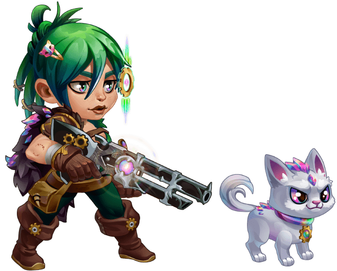
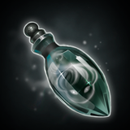
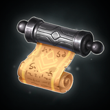
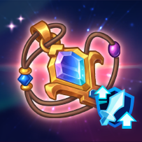
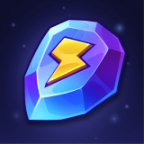

⚡ Кристаллы энергии
Основная валюта. Тратятся на прокачку реликвий мастерской и конвертируются в монеты Доблести. Обменный курс повышает Том жадности.
Добываются из квестов, ежедневных бонусов и наград

Семидневное событие по стандартной механике «Команда на приключение» — прокачка реликвий мастерской, семь глав с боссами и накопление монет Доблести для призыва осколков Астрид в Алтаре судьбы.




Правило события: Том жадности → Грааль щедрости → Амулет битвы. Не качать в обратном порядке — это главная ошибка, которая стоит сотни монет Доблести.
Основная валюта. Тратятся на прокачку реликвий мастерской и конвертируются в монеты Доблести. Обменный курс повышает Том жадности.
Используются в Алтаре судьбы для розыгрыша осколков Астрид. Курс обмена кристаллов в монеты зависит от уровня Тома жадности.
Продвигают Battle Pass. Начисляются автоматически, не хранятся в инвентаре, нельзя конвертировать после события. Ценность резко зависит от наличия Золотого билета.
Трата медальонов даёт дополнительные кристаллы энергии по накопительной таблице. До 150 медальонов за событие → 120 кристаллов.
Монеты Стойла — отдельная валюта мини-игры событийной битвы. Начинаете с 120 монетами, зарабатываете в боях и тратите на найм героев в стойле. Не путать с монетами Доблести.
В мастерской три реликвии. Все три прокачать до максимума не получится — бюджет кристаллов на это не рассчитан. Выбирайте приоритет сознательно.
Том жадности → Грааль щедрости → Амулет битвы
Даёт дополнительные монеты Доблести при каждой трате кристаллов энергии. Максимальный уровень — 15. Каждый уровень увеличивает бонус на 1 000 монет за потраченный кристалл.
Снижает стоимость одного призыва в Алтаре судьбы. Максимальный уровень — 18. Чем ниже цена — тем больше призывов на накопленные монеты.
Повышает боевые бонусы в сражениях с боссами и открывает доступ к следующим главам. Требуется конкретный уровень для прохода в главы 3–7.
| Глава | Нужный уровень Амулета | Суммарных кристаллов до этой главы |
|---|---|---|
| 1 | — | 0 |
| 2 | — | 0 |
| 3 | 5 | 50 |
| 4 | 10 | 160 |
| 5 | 15 | 320 |
| 6 | 20 | 530 |
| 7 | 25 | 790 |
Кристаллы показаны суммарно (нарастающим итогом), не за одну главу.
В недавних событиях Амулет битвы переместился с нижней позиции на другое место в списке — не ориентируйтесь на положение иконки. Следите за названием реликвии, а не её позицией.
| Уровень | Бонус в бою | Стоимость шага | Суммарно | Открывает |
|---|---|---|---|---|
| 1→5 | 1–5 | 10/шаг | 50 | Глава 3 |
| 6→10 | 6–10 | 20/шаг (10 на 10) | 160 | Глава 4 |
| 11→15 | 11–15 | 32/шаг | 320 | Глава 5 |
| 16→20 | 16–20 | 40–50/шаг | 530 | Глава 6 |
| 21→25 | 21–25 | 50–60/шаг | 790 | Глава 7 |
Семь глав, каждая — отдельный бой с боссом. Кристаллы энергии в таблице указаны нарастающим итогом, не за одну главу.
| № | Название главы | Кристаллов (итого) | Награды за прохождение |
|---|---|---|---|
| 1 | Узники кошмара | 0 | 1 Сундук с осколком героя · 10 000 монет Доблести · 1 Сапфировый медальон |
| 2 | Незнакомые лица | 0 | 30 Большой сундук с камнями скинов · 20 000 монет Доблести · 2 Сапфировых медальона |
| 3 | Похищенный свет | 50 | 1 Эпический дар Доминиона · 20 000 монет Доблести · 2 Сапфировых медальона |
| 4 | Тень на пороге | 160 | 1 Легендарный дар Доминиона · 20 000 монет Доблести · 2 Сапфировых медальона |
| 5 | Осколки памяти | 320 | 20 Сундуков с ресурсом героя · 50 000 монет Доблести · 10 Сапфировых медальонов |
| 6 | Сердце тишины | 530 | 1 Дар Доминиона · 50 000 монет Доблести · 10 Сапфировых медальонов |
| 7 | TBA | 790 | Осколки Астрид · 10 Сапфировых медальонов + бонусные награды |
Главы 4–7 официально ещё не раскрыты полностью на момент написания гайда — названия и точные награды 7-й главы могут отличаться. Структура и стоимость кристаллов подтверждена из нескольких источников.
Полный бюджет при правильном прохождении — ровно 790 кристаллов. Вот откуда берётся каждый кристалл.
| Источник | Кристаллов | Тип |
|---|---|---|
| Витрина (ежедневно, 8 в день × 7 дней) | 56 | 🆓 Бесплатно |
| Квест: победа в событийном бою | 128 | 🆓 Бесплатно |
| Квест: тренировочный бой | 66 | 🆓 Бесплатно |
| Квест: бой с питомцем | 40 | 🆓 Бесплатно |
| Квест: бой на стойле | 100 | 🆓 Бесплатно |
| Групповой подарок (распространение ссылки) | 48 | 🆓 Бесплатно |
| Итого бесплатно | 438 | |
| Battle Pass (без Золотого билета) | 40 | 💰 Battle Pass |
| Подарки разработчиков (до 3 за событие, по 16) | до 48 | 🎁 Подарок |
| Сапфировые медальоны (30 шт. = F2P минимум) | 30 | 💠 Медальоны |
| Трата изумрудов (500 = базовый уровень) | 3 | 💎 Платно/накоп. |
| Итого F2P с Battle Pass и мин. тратами | ≈ 559 | |
| Золотой билет (вместо Battle Pass) | 150 | 💰 Платно |
| Трата изумрудов (150 000 = максимум) | 90 | 💎 Платно |
| Сапфировые медальоны (150 шт. = максимум) | 120 | 💠 Медальоны |
| VIP квест (только с Золотым билетом) | 18 | 💰 Платно |
| Ежедневный заряд (платная часть) | 24 | 💰 Платно |
| Максимальный бюджет (все источники) | 790 |
Без каких-либо трат бесплатных кристаллов хватает примерно на 438 единиц — это уверенное прохождение 5-й главы (нужно 320) с запасом на осколки в Алтаре. Для 6-й главы (530) нужны Battle Pass или подарки разработчиков. Для 7-й главы (790) — вся таблица: Battle Pass + медальоны + трата изумрудов.
Отметьте доступные источники — калькулятор покажет, до какой главы дотянетесь.
Battle Pass продвигается очками Славы. Бесплатная дорожка открыта всем участникам. Золотой билет разблокирует платную дорожку и даёт значительно больше кристаллов и ресурсов.
| Уровень | Бесплатная награда | Награда с Золотым билетом | Очков (итого) |
|---|---|---|---|
| 1 | 1 Сапфировый медальон | 5 Сапфировых медальонов | 0 |
| 2 | 1 000 изумрудов | 5 000 изумрудов | 100 |
| 3 | 50 камней скина (сундук) | 250 камней скина (сундук) | 200 |
| 4 | 2 Кристалла души | 10 Кристаллов души | 300 |
| 5 | 10 Кристаллов энергии | 30 Кристаллов энергии | 400 |
| 6 | 50 Кристаллов желания | 250 Кристаллов желания | 500 |
| 7 | 4 000 монет артефакта | 20 000 монет артефакта | 600 |
| 8 | 20 Редких рун зачарования | 100 Редких рун зачарования | 700 |
| 9 | 40 Абсолютных эссенций артефакта | 160 Абсолютных эссенций артефакта | 800 |
| 10 | 10 Кристаллов энергии | 30 Кристаллов энергии | 1 000 |
| 11 | 2 Бутылки энергии | 10 Бутылок энергии | 1 200 |
Таблица показывает первые 11 уровней. Battle Pass обычно содержит 20+ уровней.
Уровни 5 и 10 Battle Pass дают дополнительные Кристаллы энергии — это прямой вклад в бюджет прокачки. Даже бесплатная версия Battle Pass приносит +40 кристаллов, что может хватить для перехода с главы 5 на 6.
Квесты «Поток изумрудов» работают по накопительному принципу — каждая следующая планка включает все предыдущие награды.
| Потрачено изумрудов | Итого кристаллов |
|---|---|
| 100 | 1 |
| 500 | 3 |
| 3 000 | 6 |
| 7 000 | 9 |
| 12 000 | 12 |
| 18 000 | 16 |
| 25 000 | 20 |
| 35 000 | 26 |
| 50 000 | 34 |
| 70 000 | 44 |
| 90 000 | 54 |
| 120 000 | 70 |
| 150 000 | 90 |
Трата изумрудов через квест засчитывает любые изумруды, потраченные в игре в период события — включая обычные покупки, ускорения и т.д. Специально фармить их не нужно, если вы и так их тратите.
Накопительная таблица: каждая следующая строка — итоговое число при достижении этого порога расхода.
| Потрачено медальонов | Итого кристаллов | Примечание |
|---|---|---|
| 3 | 3 | |
| 6 | 6 | |
| 10 | 10 | |
| 20 | 20 | |
| 30 | 30 | F2P ориентир |
| 50 | 50 | |
| 100 | 100 | |
| 120 | 110 | +10 бонус сверх 100 |
| 150 | 120 | Максимум, +20 бонус |
Все первые кристаллы — в Том жадности. Чем раньше он прокачан, тем больше монет Доблести принесут все последующие траты кристаллов.
После Тома — в Грааль. Снижает стоимость призыва в Алтаре, что напрямую умножает число полученных осколков на те же монеты.
Качать ровно до уровня, нужного для следующей главы — не больше. Если следующая глава недостижима по бюджету, лишние кристаллы конвертируйте в монеты Доблести через Том.
Не пропускайте ежедневные квесты — 8 кристаллов с витрины и бои события дают суммарно большую часть бесплатного бюджета. Пропущенный день нельзя наверстать.
Одиночные призывы в Алтаре менее эффективны — используйте пакет по 10 призывов, когда накопится достаточно монет Доблести.
Открывает главы, но не приносит монет. Том жадности на тех же кристаллах даёт в разы больше дохода за всё событие.
Копите монеты Доблести и тяните по ×10 — экономия есть даже при одинаковом шансе на осколок.
Витрина и квесты боёв дают 438 из 790 кристаллов — больше половины полного бюджета. Каждый пропущенный день невосполним.
В Алтаре судьбы есть побочные товары — фокусируйтесь только на осколках Астрид, пока не соберёте целевое количество звёзд.
Каждый «лишний» уровень Амулета — кристаллы, которые могли умножить доход через Том жадности на оставшиеся дни события.
Активное событие — время максимально вкладываться именно в Астрид и Лукас, а не параллельно прокачивать других.
Данные собраны из нескольких независимых источников сообщества. Тотемы Искажения в наградах этого события не предусмотрены (подтверждено из нескольких источников). Точные награды глав 4–7 могут отличаться по мере раскрытия официальных данных.